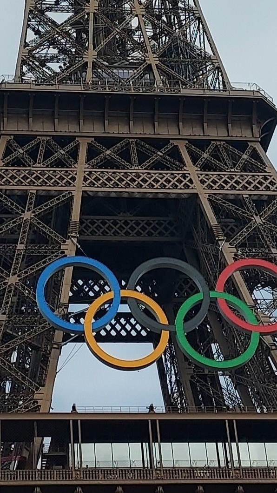
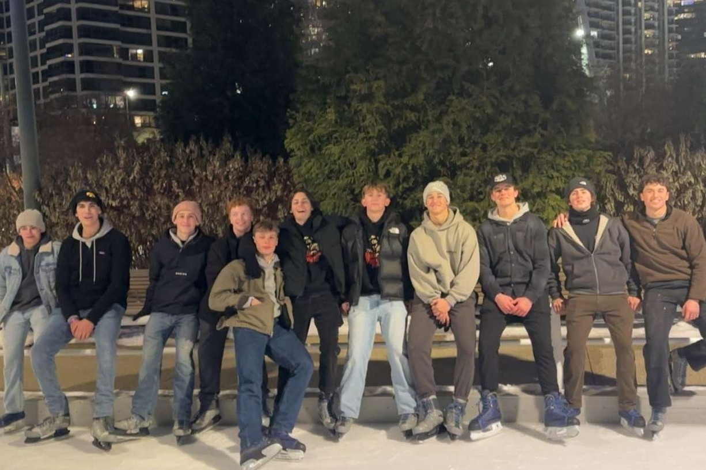

About Me
I am a 19 year old student from Indiana who enjoys running, weight lifting, traveling, and rock climbing. Additionally, I am a current member of the Alpha Sigma Phi fraternity. I'm studying Business and Information Technology at IIT. My parents have owned multiple restaurants for much of my life which I have worked at since highschool; because of this I found my interest in restaurant consulting. After graduation I hope to pursue a career in restaurant consulting to help small businesses integrate technology and marketing to improve profit.
Travel Timeline
Camped in Yellowstone
July 2023
Even with all the places I eventually traveled to, I think Yellowstone National Park was one of my favorite locations. The entirety of Yellowstone had so many differing environments including snowcapped mountains, geysers, wateerfalls and rivers all within its boundaries.
Camped in Tennessee
June 2024

After I graduated highschool I spent a week hiking with my friends in the Great Smoky Mountains. When I returned home from Tennessee I spent a short week back home before I also got to fly to Europe.
Toured Europe
July 2024
While in Europe I went to London, Stonehenge, and the Eiffel Tower in person before the Olympics.
Spring Rush
Spring 2025
During our Spring Rush this semester for the fraternity I went ice skating for the first time. While I struggled with it at first I quickly picked up and glad that I had the opportunity to go. Since the semester started I have moved into fraternity housing where I have enjoyed my experience greatly compared to the school's dorms.